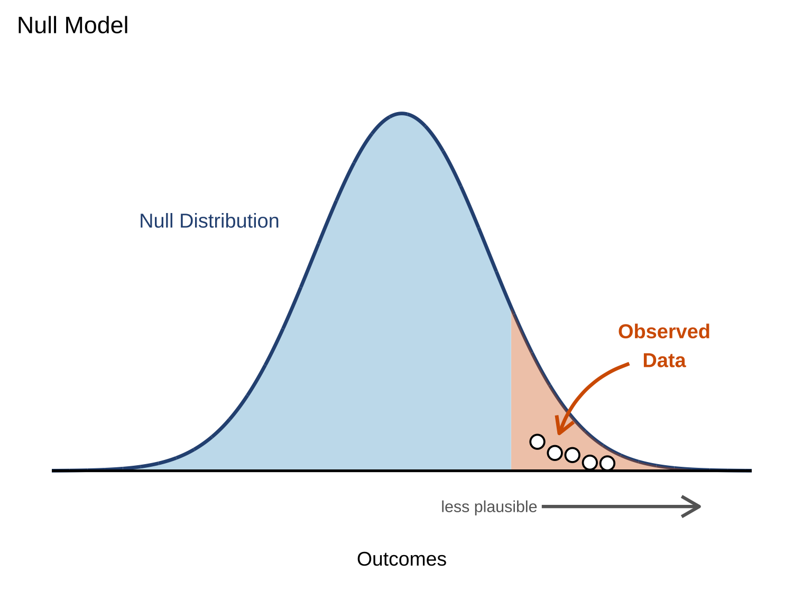
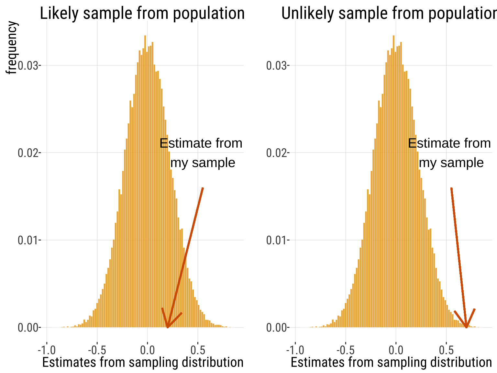
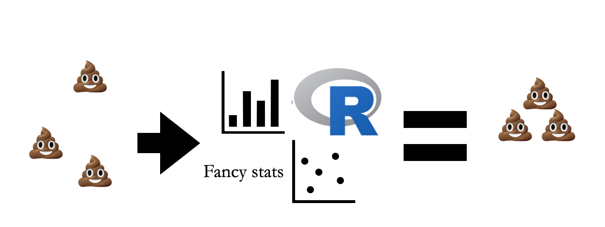
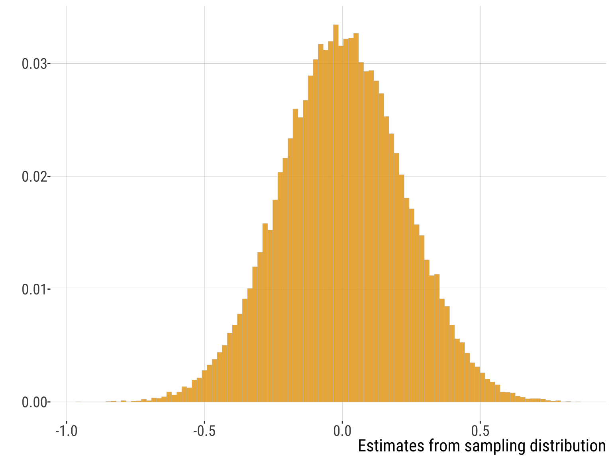
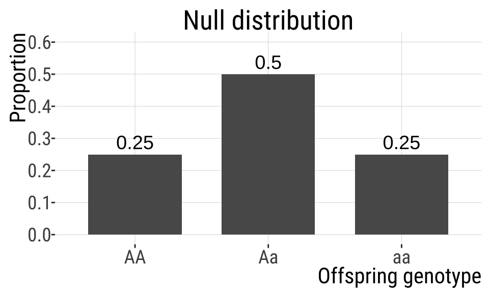
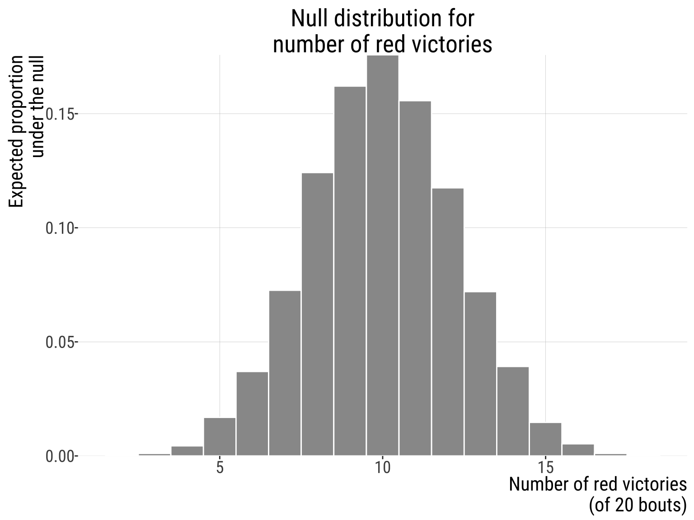
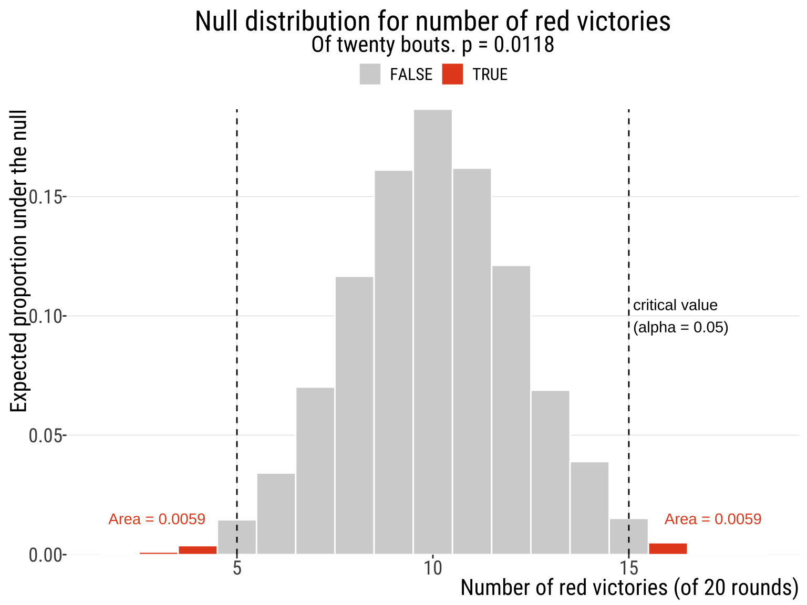

5.1.Hypothesis Testing
How it works
Bárbara D. Bitarello
2026-11-04
Key learning goals
By the end of this, students will be able to:
- Distinguish between estimation and hypothesis testing.
- Define a null model and explain how it generates a null distribution.
- State appropriate null and alternative hypotheses for a population proportion.
- Compute and interpret a test statistic and a P-value.
- Explain Type I error, Type II error, and statistical power.
- Make and report a statistical decision in biological context.
- Describe the relationship between hypothesis tests and confidence intervals.
Readings
- WS ch. 6
- Interleaf 8, Interleaf 10
Acknowledgments
Materials from the following sources were used for some of the slides and examples:
Chris Merkord’s awesome course website https://chrismerkord.github.io/biol-275/l
Yaniv Brandvain’s course materials on github
Some examples from ABD WS
Thank you!
The Dilemma
We take samples to understand the world out there.
So, can our estimates be simply explained by chance, or are they special?
The solution
We can only take a sample and make estimates.
We can imagine taking infinite samples from a population
Build a sampling dist. from population we can describe.
Where would or estimate fall on this distribution

Critical Assumption
Hypothesis testing assumes random sampling – or that we account for non-random sampling in building the null model.
Hypothesis tests account for sampling error, NOT for sampling bias.

Inspirational figure to remind you that: Hypothesis tests from biased samples are misleading and cannot be trusted
In other words
Life is like a sewer. What you get out of it depends on what you put into it. – Tom Lehrer
Two different goals: estimation vs hypothesis testing
Estimation
What is the value of a population parameter?
How uncertain is that estimate?
How large is the effect?
Hypothesis testing
Is the population parameter consistent with a specific value?
Is the observed effect plausibly due to random variation alone?
Estimation emphasizes magnitude and uncertainty; hypothesis testing emphasizes compatibility with a specific model.
Hypothesis testing compares data to a null model
-
Null model
Describes how data would vary if only random variation were operating
Baseline probability model against which observed results can be compared
Generates a distribution of plausible sampling outcomes (null distribution)
-
Hypothesis testing
Compares observed data to null distribution
If observed data fall in the extreme tail of that distribution, the data are unlikely under the null model
Null Model
A null model defines what “random variation alone” would look like.
Describes how data would vary if only random variation were operating
Baseline probability model against which observed results can be compared
Generates a distribution of plausible sampling outcomes (sampling distribution)
## NULL
Hypotheses are about POPULATIONS
- We conduct hypothesis testing by checking if our estimate is surprising (unlikely, unnusual) under the null model.
Null hypothesis (\(H_0\))
is a specific claim about a population parameter.
E.g.: \(\mu = 0\) and \(\sigma^2 = 1\); \(\mu_{pop1} = \mu_{pop2}\).
reflects all aspects of the null population, except those posed by \(H_0\); reflects the process of sampling.
skeptically argues that data come from a population described by the null model.
Alternative hypothesis (\(H_A\))
not specific.
E.g. \(\mu \neq 0\); \(\mu_{pop1} = \neq \mu_{pop2}\)
Represents patterns in the data that are inconsistent with the null hypothesis.
Includes all other feasible values for the population parameter besides the value stated in the null hypothesis.
The null hypothesis implies a data-generating process
A null hypothesis specifies a value for a population parameter
That specification defines a probabilistic data-generating process
Repeating that process produces a null distribution
Example: Two heterozygous parents reproduce (Aa × Aa)
Data-generating process: meiosis produces gametes A and a with \(p=0.5\) each, fertilization pairs gametes at random
Expected offspring genotype proportions: AA = 0.25, Aa = 0.50, aa = 0.25
These expected proportions define the null distribution for genotype outcomes in offspring

Example: red vs blue wrestlers
“Real world” question: Does wearing a red shirt help win a wrestling match
First: Turn this into a more “statistical” question, gather some data, and get to work!
The experiment and results
Data / experiment:
16 of 20 rounds had more red-shirted than blue-shirted winners in in the 2004 Olympics. So we estimate \(\hat {p_red}=16/20=0.8\)
Shirt color was randomly assigned.
-
Interpretation:
Potentially related to red as a sign of aggression in animals?
Referee bias in favor of wrestlers wearing red?
The steps of hypothesis testing
| Step | Question being answered | What we do | Statistical Meaning |
|---|---|---|---|
| 1 | What claim are we testing? | State \(H_{0}\) and \(H_{A}\) | Specify a model that defines \(Pr[data|H_{0}]\) |
| 2 | How far do the data depart from the null? | Compute a test statistic | Measure distance from what is expected under \(H_0\) |
| 3 | How unusual is this result? | Compute a \(P-\)value | \(Pr[\text{data as or more extreme}|H_{0}]\) |
| 4 | What do we conclude? | Translate statistical evidence into a biological conclusion | Make a decision about \(H_{0}\) and state the conclusion in biological terms. |
The Steps of Hypothesis Testing
What claim are we testing? State \(H_0\) and \(H_A\).
Specify a model that defines \(Pr[data|H_{0}]\)
- Calculate a test statistic;
- Generate the null distribution.- How unusual is this result?
- Find critical value at specified $\alpha$, and the p-value.-
What do we conclude?
Reject the \(H_0\) if the test stat is \(\geq\) the critical value (\(p\leq\alpha\)) OR
Fail to reject \(H_0\) if the test stat is \(<\) the critical value (\(p>\alpha\)).
Step 1: What claim are we testing?
Are the colors of outfits won by wrestlers predictors of victory/defeat?
The Null Hypothesis represents no difference in wins between the shirt colors.
- \(H_0\): Red and blue-shirted athletes are equally likely to win (proportion of red among winners \(p_{red} = 0.5\)). ( specific)
The alternative hypothesis represents a difference in frequency
- \(H_A\): Red & blue-shirted athletes are not equally likely to win (proportion of red among winners \(p\neq 0.5\)). (not specific)
This is a two-sided test because the alternative allows values of \(p\) on either side of 0.50.
Q: Is 0.8 a sufficiently unusual result under the null model to reject the null hypothesis that toads do not exhibit handedness?
Generate null distribution
Obtain the null distribution for the test statistic (the number of rounds of wrestling won by athletes.
Let’s assume that shirt colors were either blue or red and they were assigned randomly to participants. There were 20 rounds in total.
Generating the sampling distribution for expected number of rounds won by red-shirt-wearing athletes (out of 20 rounds). Our null hypothesis is that no color has an advantage.
The null distribution
Even if \(H_0: p = 0.50\) is true, we would not expect to observe exactly 10 red-shirt wins every time we have 20 fight rounds.
Instead, repeated samples would produce a distribution of possible outcomes.
Under \(H_0\), the number of red shirt wins in a sample of 20 follows a binomial distribution:
\[ X \sim \text{Binomial}(n = 18, p = 0.50) \]
- This distribution is called the null distribution because it describes the sampling behavior of the test statistic assuming \(H_0\) is true.
Q: Where does our observed value of 16 fall in this distribution?

The \(P\)-value
The \(P\)-value measures how unusual the observed result is under \(H_0\).
It is the probability of observing data as extreme as or more extreme than what we observed, assuming \(H_0\) is true.
\[ P = \operatorname{Pr}[\text{data as or more extreme} \mid H_0] \]
- For a two-sided test, we consider outcomes extreme in both directions.

Calculating the \(P\)-value
Our observed test statistic is 16 wins for red shirts.
Probability of 16 or more red shirt wins:
\[ \operatorname{Pr}[X \ge 16] = \\ \operatorname{Pr}[X = 16]+\operatorname{Pr}[X = 17]+\operatorname{Pr}[X = 18]+\operatorname{Pr}[X = 19]+\operatorname{Pr}[X = 20] = \\ 0.00591 \]
- For a two-sided test, we double this probability:
\[ P = 2 \times \operatorname{Pr}[X \ge 16] = 0.0118 \]
The significance level (\(\alpha\))
The significance level, \(\alpha\), is a probability threshold used to decide whether to reject \(H_0\).
It represents the probability of rejecting \(H_0\) when \(H_0\) is actually true (Type I error).
A common choice (for arbitrary reasons) is:
\[ \alpha = 0.05 \]
-
Decision rule:
- If \(P \le \alpha\), reject \(H_0\)
- If \(P > \alpha\), fail to reject \(H_0\)
Decision and biological conclusion
Because \(0.01182 < 0.05\), we reject \(H_0\).

There was a lot of hype around this at the time, but alternative explanations for the phenomenom have arisen. E.g., see https://www.nature.com/articles/s41598-024-81373-3.
Hypothesis testing vs. confidence intervals
A 95% confidence interval provides an estimate of a parameter and a measure of uncertainty.
-
For a two-sided test at \(\alpha = 0.05\):
- If the null value lies outside the 95% confidence interval, we reject \(H_0\).
- If the null value lies inside the 95% confidence interval, we fail to reject \(H_0\).
Thus, confidence intervals and hypothesis tests often lead to the same conclusion.
Hypothesis tests are useful when the goal is to evaluate a specific scientific claim (e.g., \(p = 0.50\)), while confidence intervals emphasize estimation and effect size.
Reporting the results
At minimum, report:
- The test statistic: 16 red shirt wins
- The sample size: \(n = 20\)
- The \(P\)-value: \(P = 0.01182\)
In addition, report an estimate of the parameter and its uncertainty:
\[ \hat{p} = 0.8 \]
Provide a confidence interval or standard error when possible.
E.g. \(0.578 < p < 0.925\) (95% CI)
Example:
In a sample of 20 taekwondo wrestling rounds, 16 (80%) were won by wrestlers wearing red. A two-sided test indicated that this differed significantly from 0.50 (\(P = 0.01182\)), suggesting a bias in the population.
Errors in hypothesis testing
-
A Type I error occurs when we reject \(H_0\) even though \(H_0\) is true.
- Type I error rate = \(\alpha\)
-
A Type II error occurs when we fail to reject \(H_0\) even though \(H_0\) is false.
- Type II error rate = \(\beta\)
-
Power is the probability of correctly rejecting \(H_0\) when it is false.
- Power = \(1-\beta\)
There is a tradeoff: decreasing \(\alpha\) generally increases \(\beta\), unless sample size increases.
Table summarizing possible combinations of reality (was \(H_0\) true or not?) versus the conclusion of a statistical hypothesis test (did you reject \(H_0\) or not?)
| Reality | ||
| Conclusion | \(H_0\) True | \(H_0\) False |
| Reject \(H_0\) | Type I error | Correct (Power) |
| Do not reject \(H_0\) | Correct | Type II error |
When the null hypothesis is not rejected
If \(P > \alpha\), we fail to reject \(H_0\).
This is sometimes described as a nonsignificant result.
We do not conclude that \(H_0\) is true or that \(H_A\) is false.
We conclude only that the data are compatible with \(H_0\).
-
A nonsignificant result may occur because:
- The null hypothesis is true, or
- The study lacked sufficient power to detect a real effect.
 ]
]
One-sided tests
- In a one-sided test, the alternative hypothesis specifies a direction:
\[ H_A: p > p_0 \quad \text{or} \quad H_A: p < p_0 \]
We reject \(H_0\) only if the data depart from \(H_0\) in that specified direction.
A one-sided test should be used only if the direction is justified before examining the data.
In most scientific studies, two-sided tests are preferred because effects could plausibly occur in either direction.
Example: A one-sided test in toxicology
Question: Does exposure to a pollutant increase amphibian mortality?
Let \(p\) denote the mortality rate in exposed individuals, and \(p_0\) the mortality rate in controls.
\[ H_0: p = p_0 \] \[ H_A: p > p_0 \]
The alternative is one-sided because the biological concern is an increase in mortality.
A decrease in mortality would not support the claim of toxicity.
B215: Biostatistics with R